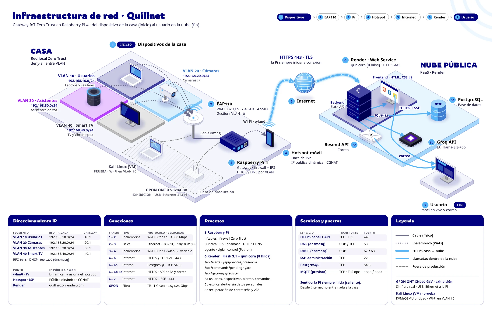

Informe escrito
Versión en español · Departamento de TICS, Ciberseguridad
Si tu navegador no muestra la vista previa, usa “Abrir PDF” o descarga el PDF.
Documentación oficial
El trabajo escrito completo del proyecto, presentado en Expotec 2026, en español e inglés: marco teórico, diseño, arquitectura, análisis de seguridad, pruebas, resultados y plan de mejora.
Datos con corte al 5 de noviembre de 2026
Descargas
Versión en español · Departamento de TICS, Ciberseguridad
Si tu navegador no muestra la vista previa, usa “Abrir PDF” o descarga el PDF.
English version · IT Department, Cybersecurity
If your browser can’t show the preview, use “Open PDF” or download the PDF.
Resumen
Un gateway Zero Trust sobre Raspberry Pi 4 para proteger los dispositivos IoT de un hogar, validado con una encuesta, pruebas ofensivas y pruebas automatizadas.
Red del hogar en 4 VLAN (usuarios, cámaras, asistentes de voz y Smart TV), firewall nftables que niega todo por defecto e inspección en línea con Suricata como sistema de prevención de intrusiones.
A 5 de noviembre de 2026: bloqueo en línea de un beacon real del framework Covenant y confirmación de que el tráfico MQTT sin cifrar hacia un broker público no salió de la red.
El tráfico dentro de una misma VLAN no pasa por el gateway y por tanto no se inspecciona. Esa limitación, junto con las demás pruebas pendientes, está en el plan de mejora del informe.
Investigación: encuesta a 112 hogares costarricenses, pruebas de seguridad desde Kali Linux y pruebas automatizadas del backend. Palabras clave: IoT, Zero Trust, segmentación de red, VLAN, IPS, Suricata, Raspberry Pi, hogar inteligente.
Cifras clave
Contenido
Cada enlace abre el PDF directamente en la sección indicada.
| Sección | De qué trata | Ir a la página |
|---|---|---|
| Resumen | Problema, solución y resultados en una página. | ESEN |
| Capítulo I Planteamiento | Objetivo general y específicos, justificación, definición y análisis del problema, pregunta de investigación. | ESEN |
| Capítulo II Marco teórico | IoT y estadísticas actualizadas, protocolos y vulnerabilidades, Zero Trust, segmentación, Purple Team, soluciones del mercado y casos reales documentados. | ESEN |
| Capítulo III Metodología y desarrollo | Diseño de la investigación, justificación del stack técnico y arquitectura por capas. | ESEN |
| · Arquitectura por capas | Red, firewall, IPS, backend, base de datos y frontend. | ESEN |
| · Gestión administrativa y financiera | Roles, presupuesto del prototipo, modelo de suscripción y curva de adopción a 18 meses. | ESEN |
| · Diagrama de infraestructura | Red privada y red pública, direccionamiento, servicios y puertos. | ESEN |
| · Análisis de seguridad | Activos, tríada CIA, vulnerabilidades, amenazas, riesgos y medidas de seguridad. | ESEN |
| · Análisis de resultados | Pruebas ofensivas, bloqueo en línea y hallazgos, con imágenes de evidencia. | ESEN |
| · Plan de mejora | Limitaciones identificadas y pruebas pendientes. | ESEN |
| Capítulo IV Cierre | Conclusiones generales y recomendaciones, para la actualidad del proyecto y para su desarrollo futuro. | ESEN |
| Bibliografía | Fuentes citadas en el informe. | ESEN |
| Anexos | Material de apoyo. | ESEN |
Infraestructura
Diagrama de conexión y procesos del Capítulo III: la red local Zero Trust, el gateway y los servicios en la nube. La Raspberry Pi siempre inicia la conexión; desde internet no entra nada a la casa.

Cómo citar
Arias Gutierrez, S., Campos Gomez, I., Chinchilla Bonilla, J., Montero Naranjo, J., Piedra Chaves, I., & Valverde Rodriguez, J. (2026). Quillnet [Informe escrito]. CEDES Don Bosco, Departamento de TICS, Ciberseguridad. Expotec 2026.
Sé de los primeros en proteger tu casa con Quillnet.
Quiero Quillnet